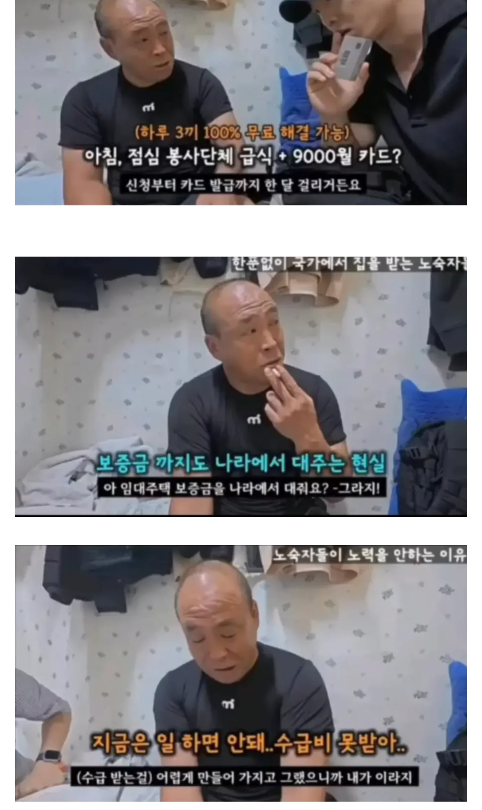

나이 들어보이지만 40대중반 사지 멀쩡한 노숙자임
수급자기준 널널할때 수급자되서 존나 한량처럼 사는중
밥 공짜로 먹고 자고싶을때 자고 주거비 지원받고 의료비
통신비 혜택까지 받고 있음
죽어도 일할 생각 없다고함

나이 들어보이지만 40대중반 사지 멀쩡한 노숙자임
수급자기준 널널할때 수급자되서 존나 한량처럼 사는중
밥 공짜로 먹고 자고싶을때 자고 주거비 지원받고 의료비
통신비 혜택까지 받고 있음
죽어도 일할 생각 없다고함
인간 말종새끼들한테 수급비 꾸역꾸역 주고 집 없거나 쓰레기 집 사는 청년부터 열심히 사는 중장년층은 다 떨어지는 개꿀 임대아파트를 우선 지급하는게 맞는지 모르겠음 열심히 살아서 애매하게 가난한거보다 저렇게 던지는게 삶의 난이도가 더 쉽다는게 말이되나 ㅋㅋㅋ
특별한 사연이 없다면 지금 절반 정도만 지원해주고
월 200이하 수익 + 120 이런 형태는 안되려나
사지 멀쩡할때 수급자 혜택받으려면 만 65세가 넘어야 가능한 .
니가 알게 모르는 심연이 많음.. 팝콘 티비 20~30대 멀쩡한놈들이 어떻게 수급자 받았는지 보면
알수있음 편법으로 수급자나 차상위 혜택 받는 인간들이 생각보다 겁나게 많음
수십억 물려받을 재산있고 건물있어도 소득 다 빼놓고 차cc 기준 딱 턱걸이해서 차상위 받는 인간도 있고
생활하는데 아무 지장없는 경증이지만 노등능력 없는걸로 뺴서 수급비 받는사람도 있고
수급자라는게 무조건 아파야지만 주는게 아냐 그건 잘못된 상식임 노동능력 없고 가난한 사람한테 주는 제도인데
노동능력없다 = 존나게 아프다로 귀결시키지 말라는거임 일상생활 아무 지장없는데 빼는 방법도 많아
그것들 전부 신고하면 됨
전부 토해내야함
중증장애없이 근판받는거 빡심
40대 중반이라고..?
미래에는 물리적으로 아에 뇌치료 기술 나올테니 기존 자아 제거하고 새로운 자아 넣고 그러면 괜춘지않을까? 그런 날이 올려나
정부는 아무일도 안하는 청년 노숙자 도와줄 돈은 있고 열심히 사는데 힘든 사람들 정책은 쥐뿔도 없어
저런새끼들 일하러나오면 같이일하는사람들 피해감
숙식도 해결해주는데 돈까지 준다고????? 와 씨
수급자 혜택
의료급여 : 물리치료 수액 맞고 별짓다해도 1000원만 내면됨
주거급여,교육급여 통신비할인 공과금할인 교통할인 주민세 수신료 다감면
수급자는 공공임대주택도 우선순위임
돈이 문제가 아니라 혜택이 존나게 많아서 포기 못하는거임 돈 130이 큰돈도 아니고
일하면 뭘해도 200이상 받는데 안하는 이유는 이거지
현직자 말은 안믿고 팝콘티비 수급자썰은 믿어? ㅋㅋㅋ
그냥 정치적 선동영상 캡처본 갖고와서 글쓰는거 같은데
이해가 안돼
저렇게 지원금을 의미없이 준다는것도 말이 안되고
정작 받는다한들 논란이 되면 지원금이 끊길 위험이 있는데
그걸 감수하면서 저런 영상을 얼굴 내밀고 나온다고? 그렇게 받기 힘들다고 한 지원금인데?
오히려 아무도 모르게 쉬쉬 하는게 더 정상적인 패턴 아닌가?
작성자를 까는게 아니고 그냥 통상적인 행동 범위에서 벗어나는 행동들이라 진짜 이해가 안가서 그럼
끊기는 정도가 아니라 지금까지 받은 돈 전부 토해내야함
이새끼는 기초생활수급자에 대해서 검색 5분만 해봐도 알수있는것도 모르면서 선동날조하다가 안통하니깐
내가 팝콘티비 보니깐 부정수급자 많더라!!!ㅋㅋㅋㅋㅋㅋㅋㅋ 봤으면 신고를 처하던가
왜? 건보도 부정수급하는 놈들 있으니깐 건보를 없애자 하지?
레전드네
저렇게 나온 사람들 싹다 신고하면 지금까지 받은 부정 수급비 다 토해내야함
영상의 주소를 증거로 복지기관에 부정수급을 온라인으로 신고해라
싹다 시원하게 처벌받는다
굴라그가 필요하다
ㅋㅋㅋ 전국노숙자연맹에서 지원끊기면 칼부림 연대하자고 대동단결이라도 했음??
지혼자 극단적 망상에 빠져서 공포마케팅하노?
아하 니는 밥못먹을 상황에 처하면 바로 칼들고 뛰쳐나가는 놈이구나
그래서 다른 사람들도 니같이 행동할꺼라고 여기는구나 ㅋㅋㅋㅋ